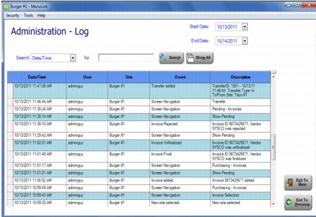

Activity Log The Activity Log displays customer activity within the MenuLink Client, arranged by the most recent event first. The description content will dynamically expand per the amount of data in the description. Informative descriptions offer an excellent audit tool. Note: The information in this area is read-only; it cannot be modified. The Activity Log can also be printed using the Log of Events report (Report # 18) which is easily filtered by event type and can include multiple sites and report groups. For information on how to sort and search for information in this table, see Sorting and Searching for Information. 